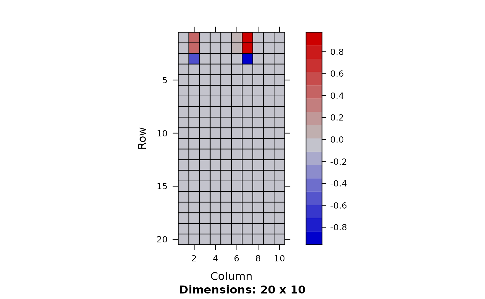
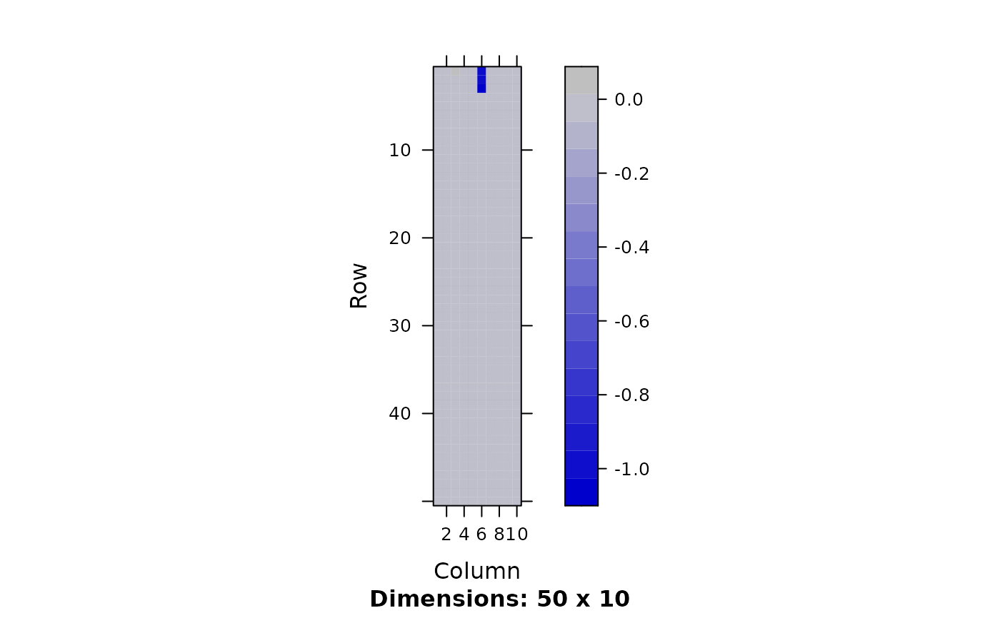
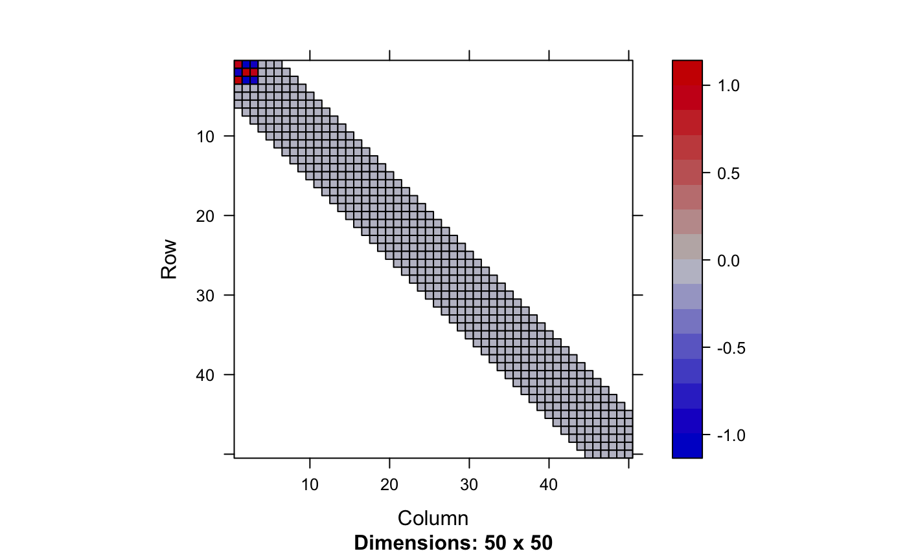
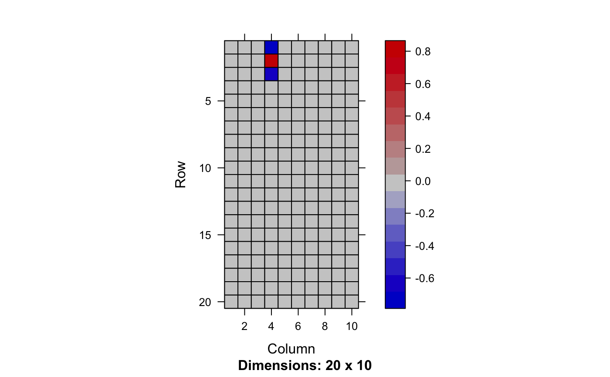
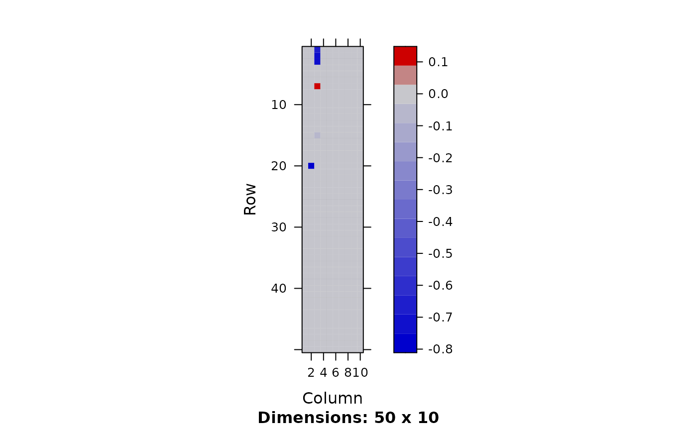
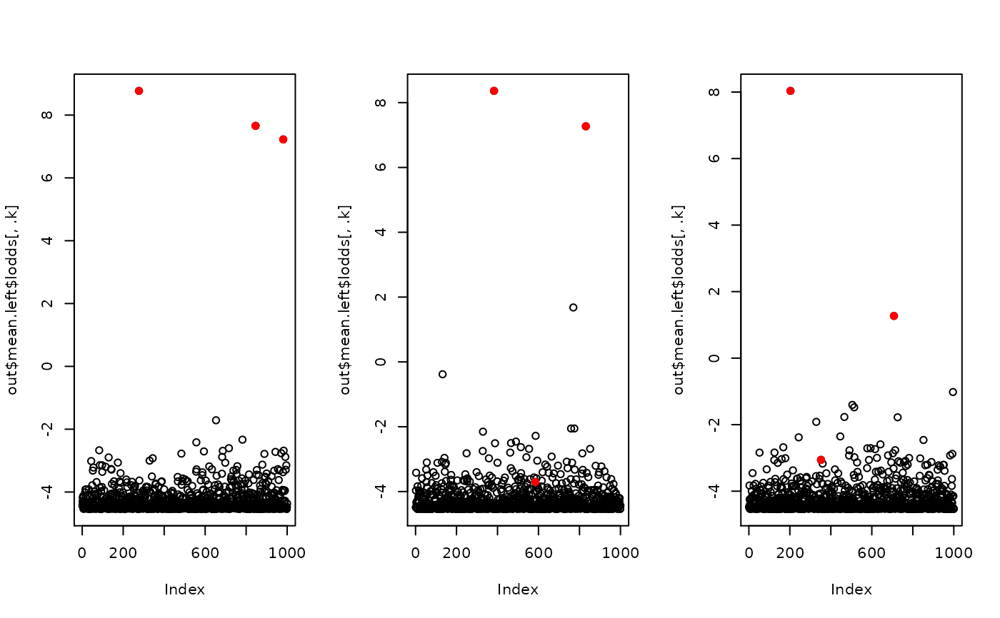

fit.fqtl.RdVariational inference of (factored) regression.
fit.fqtl(
y,
x.mean,
factored = FALSE,
svd.init = TRUE,
model = c("gaussian", "nb", "logit", "voom", "beta"),
c.mean = NULL,
x.var = NULL,
y.loc = NULL,
y.loc2 = NULL,
x.mean.loc = NULL,
c.mean.loc = NULL,
cis.dist = 1e+06,
weight.nk = NULL,
do.hyper = FALSE,
tau = NULL,
pi = NULL,
tau.lb = -10,
tau.ub = -4,
pi.lb = -4,
pi.ub = -1,
tol = 1e-04,
gammax = 1000,
rate = 0.01,
decay = 0,
jitter = 0.1,
nsample = 10,
vbiter = 2000,
verbose = TRUE,
k = 1,
right.nn = FALSE,
mu.min = 0.01,
print.interv = 10,
nthread = 1,
rseed = NULL,
options = list()
)[n x m] response matrix
[n x p] primary covariate matrix for mean change (can specify location)
is it factored regression? (default: FALSE)
Initalize by SVD (default: TRUE)
choose an appropriate distribution for the generative model of y matrix from c('gaussian', 'nb', 'logit', 'voom', 'beta') (default: 'gaussian')
[n x q] secondary covariate matrix for mean change (dense)
[n x r] covariate marix for variance#'
m x 1 genomic location of y variables
m x 1 genomic location of y variables (secondary)
p x 1 genomic location of x.mean variables
q x 1 genomic location of c.mean variables
distance cutoff between x and y
(non-negative) weight matrix to help factors being mode interpretable
Hyper parameter tuning (default: FALSE)
Fixed value of tau
Fixed value of pi
Lower-bound of tau (default: -10)
Upper-bound of tau (default: -4)
Lower-bound of pi (default: -4)
Upper-bound of pi (default: -1)
Convergence criterion (default: 1e-4)
Maximum precision (default: 1000)
Update rate (default: 1e-2)
Update rate decay (default: 0)
SD of random jitter for mediation & factorization (default: 0.01)
Number of stochastic samples (default: 10)
Number of variational Bayes iterations (default: 2000)
Verbosity (default: TRUE)
Rank of the factored model (default: 1)
non-negativity on the right side of the factored effect (default: FALSE)
mininum non-negativity weight (default: 0.01)
Printing interval (default: 10)
Number of threads during calculation (default: 1)
Random seed
A combined list of inference/optimization options
a list of variational inference results
Estimate factored or non-factored SNP x gene / tissue multivariate association matrix. More precisely, we model mean parameters of the Gaussian distribution by either factored mean
$$\mathsf{E}[Y] = X \theta_{\mathsf{snp}} \theta_{\mathsf{gene}}^{\top} + C \theta_{\mathsf{cov}}$$
or independent mean $$\mathsf{E}[Y] = X \theta + C \theta_{\mathsf{cov}}$$
and variance $$\mathsf{V}[Y] = X_{\mathsf{var}} \theta_{\mathsf{var}}$$
Each element of mean coefficient matrix follows spike-slab prior; variance coefficients follow Gaussian distribution.
require(fqtl)
require(Matrix)
#> Loading required package: Matrix
n <- 100
m <- 50
p <- 200
theta.left <- matrix(sign(rnorm(3)), 3, 1)
theta.right <- matrix(sign(rnorm(3)), 1, 3)
theta <- theta.left %*% theta.right
X <- matrix(rnorm(n * p), n, p)
Y <- matrix(rnorm(n * m), n, m) * 0.1
Y[,1:3] <- Y[,1:3] + X[, 1:3] %*% theta
## Factored regression
opt <- list(tol=1e-8, pi.ub=-1, gammax=1e3, vbiter=1500, out.residual=FALSE, do.hyper = TRUE)
out <- fit.fqtl(Y, X, factored=TRUE, k = 10, options = opt)
k <- dim(out$mean.left$lodds)[2]
image(Matrix(out$mean.left$theta[1:20,]))

image(Matrix(out$mean.right$theta))

## Full regression (testing sparse coeff)
out <- fit.fqtl(Y, X, factored=FALSE, y.loc=1:m, x.mean.loc=1:p, cis.dist=5, options = opt)
image(out$mean$theta[1:50,])

## Test NB regression
rho <- 1/(1 + exp(as.vector(-scale(Y))))
Y.nb <- matrix(sapply(rho, rnbinom, n = 1, size = 10), nrow = n, ncol = m)
R <- apply(log(1 + Y.nb), 2, mean)
Y.nb <- sweep(Y.nb, 2, exp(R), `/`)
opt <- list(tol=1e-8, pi.ub=-1, gammax=1e3, vbiter=1500, model = 'nb', out.residual=TRUE, k = 10, do.hyper = TRUE)
out <- fit.fqtl(Y.nb, X, factored=TRUE, options = opt)
image(Matrix(out$mean.left$theta[1:20,]))

image(Matrix(out$mean.right$theta))

## Simulate weighted factored regression (e.g., cell-type fraction)
n <- 600
p <- 1000
h2 <- 0.5
X <- matrix(rnorm(n * p), n, p)
Y <- matrix(rnorm(n * 1), n, 1) * sqrt(1 - h2)
## construct cell type specific genetic activities
K <- 3
causal <- NULL
eta <- matrix(nrow = n, ncol = K)
for(k in 1:K) {
causal.k <- sample(p, 3)
causal <- rbind(causal, data.frame(causal.k, k = k))
eta[, k] <- eta.k <- X[, causal.k, drop = FALSE] %*% matrix(rnorm(3, 1) / sqrt(3), 3, 1)
}
## randomly sample cell type proportions from Dirichlet
rdir <- function(alpha) {
ret <- sapply(alpha, rbeta, n = 1, shape2 = 1)
ret <- ret / sum(ret)
return(ret)
}
prop <- t(sapply(1:n, function(j) rdir(alpha = rep(1, K))))
eta.sum <- apply(eta * prop, 1, sum)
Y <- Y + eta.sum * sqrt(h2)
opt <- list(tol=1e-8, pi = -0, gammax=1e3, vbiter=10000, out.residual = FALSE, do.hyper = FALSE)
out <- fit.fqtl(y = Y, x.mean = X, weight.nk = prop, right.nn = TRUE, options = opt)
par(mfrow = c(1, K))
for(.k in 1:K) {
plot(out$mean.left$lodds[, .k])
ck <- subset(causal, k == .k)$causal.k
points(ck, out$mean.left$lodds[ck, .k], col = 2, pch = 19)
}
